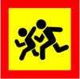

1
2
3
4
5
6
7
8
9
10
11
12
13
14
15
16
17
18
19
20
21
22
23
24
25
26
27
28
29
30
31
32
33
34
21. Перевозка пассажиров
21.1.
Разрешается перевозить пассажиров в транспортном средстве, оборудованном местами для сидения в количестве, предусмотренном технической характеристикой так, чтобы они не мешали водителю управлять транспортным средством и не ограничивали обзорность, в соответствии с правилами перевозки.
21.2.
Водителям маршрутных транспортных средств запрещается во время перевозки пассажиров разговаривать с ними, есть, пить, курить, а также перевозить пассажиров и груз в кабине, если она отделена от салона.
21.3.
Перевозка автобусом (микроавтобусом) организованной группы детей осуществляется при условии обязательного проведения инструктажа с детьми и сопровождающими лицами по правилам безопасного поведения во время движения и действиям в случае возникновения аварийно-опасных ситуаций или совершения дорожно-транспортного происшествия. При этом спереди и сзади автобуса (микроавтобуса) обязательно устанавливается в соответствии с требованиями
подпункта «в»
пункта 30.3
данных Правил опознавательный знак

«Дети».
Водитель автобуса (микроавтобуса), который осуществляет перевозку организованных групп детей, должен иметь стаж вождения
не менее 5 лет
и удостоверение водителя категории
«D».
На транспортном средстве с опознавательным знаком
«Дети»
во время посадки (высадки) пассажиров должны быть включены проблесковые маячки оранжевого цвета и(или) аварийная световая сигнализация.
21.4.
Водителю запрещается начинать движение до полного закрытия дверей и открывать их до остановки транспортного средства.
21.5.
Перевозка пассажиров (
до 8 человек,
кроме водителя) в приспособленном для этого грузовом автомобиле разрешается водителям, имеющим стаж управления транспортным средством
более трех лет
и удостоверение водителя категории «
C
», а в случае перевозки свыше указанного количества (включая пассажиров в кабине) – категорий «
C
» и «
D
».
21.6.
Грузовой автомобиль, используемый для перевозки пассажиров, должен быть оборудован сиденьями, закрепленными в кузове на расстоянии
не менее чем 0,3 м
от верхнего края борта и
0,3-0,5 м
от пола. Сиденья, расположенные вдоль заднего или бокового борта, должны иметь прочные спинки.
21.7.
Количество пассажиров, перевозимых в кузове грузового автомобиля, не должно превышать количества оборудованных для сидения мест.
21.8.
Военнослужащие срочной службы, имеющие удостоверение водителя транспортного средства категории
«C»,
допускаются к перевозке пассажиров в кузове приспособленного для этого грузового автомобиля в соответствии с количеством оборудованных для сидения мест после прохождения специальной подготовки и стажировки
в течение 6 месяцев.
21.9.
Перед поездкой водитель грузового автомобиля должен проинструктировать пассажиров об их обязанностях и правилах посадки, высадки, размещения и поведения в кузове.
Начинать движение можно только убедившись, что созданы условия для безопасной перевозки пассажиров.
21.10.
Проезд в кузове грузового автомобиля, не оборудованного для перевозки пассажиров, разрешается только лицам, сопровождающим груз или едущим за ним, при условии, что они обеспечены местами для сидения, расположенными в соответствии с требованиями
пункта 21.5
данных Правил и техники безопасности. Количество пассажиров в кузове и кабине
не должно превышать 8 человек.
21.11.
Запрещается перевозить:
-
а)
пассажиров вне кабины автомобиля (кроме предусмотренных данными Правилами случаев перевозки пассажиров в кузове грузового автомобиля с бортовой платформой или в кузове-фургоне, предназначенных для перевозки пассажиров), в кузове автомобиля-самосвала, трактора, других самоходных машин, на грузовом прицепе, полуприцепе, в прицепе-даче, в кузове грузового мотоцикла;
-
б)
детей, ростом
менее 145 см
или
не достигших 12-летнего
возраста, – в транспортных средствах, оборудованных ремнями безопасности, без использования специальных средств, дающих возможность пристегнуть ребенка с помощью ремней безопасности, предусмотренных конструкцией этого транспортного средства; на переднем сиденье легкового автомобиля – без использования указанных специальных средств; на заднем сиденье мотоцикла и мопеда;
-
в)
детей
до 16-летнего
возраста в кузове любого грузового автомобиля;
-
г)
организованные группы детей в темное время суток.